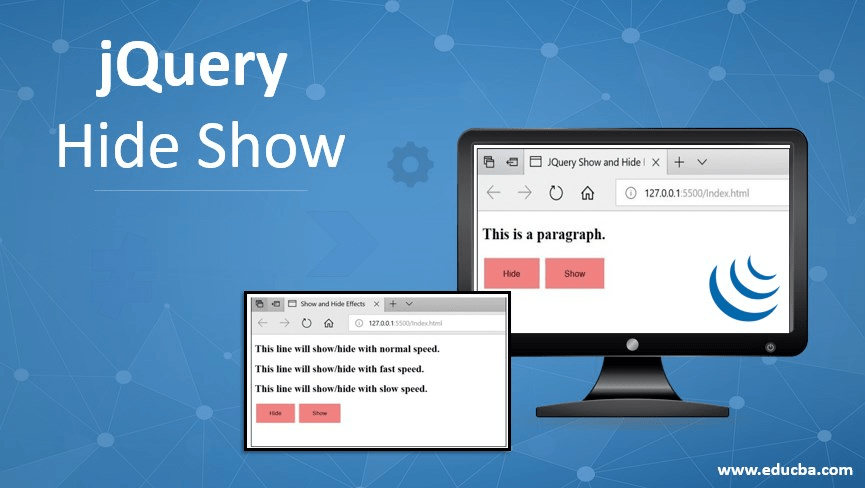

jQuery - Hide/Show
Se usan para mostrar y ocultar elementos del DOM de la web, mayoritariamente suelen ser divs, ids, clases, imágenes, elementos de formularios, etiquetas…
El uso combinado de estas 2 funciones de jQuery emula la funcionalidad básica de jQuery toggle() que muestra y oculta elementos. Otros funciones de efectos básicos son:
- slideDown(), slideUp() y slideToggle()
- fadeIn(), fadeOut() y fadeTo()
- animate() y css().
